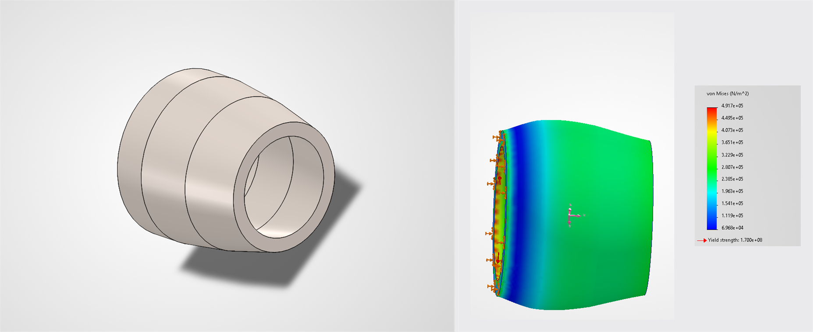
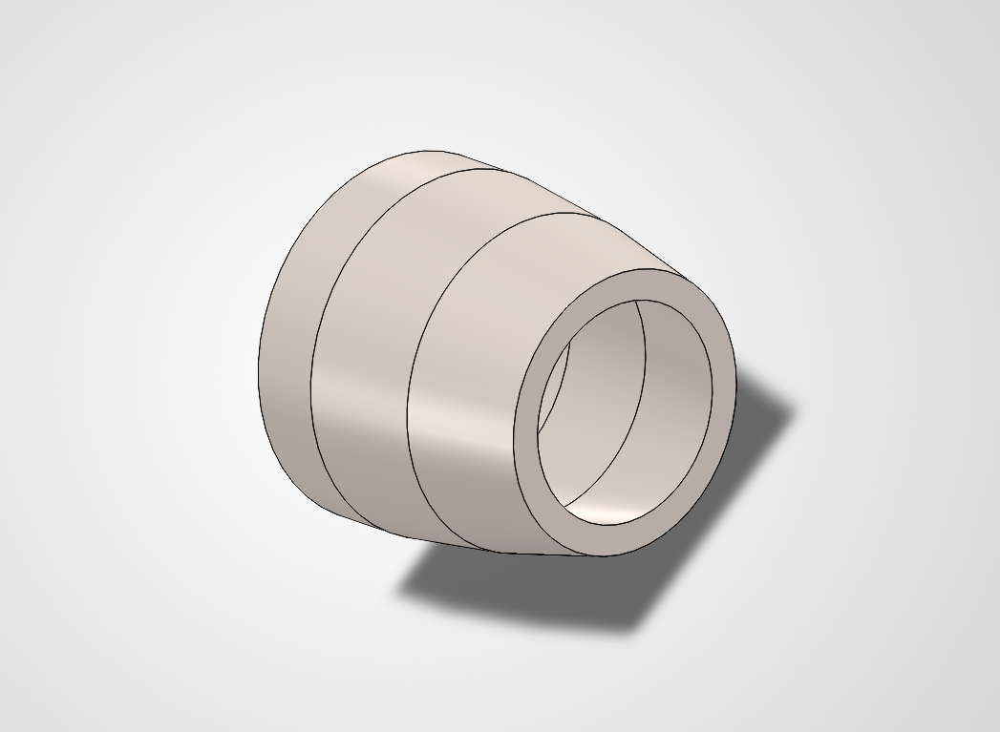
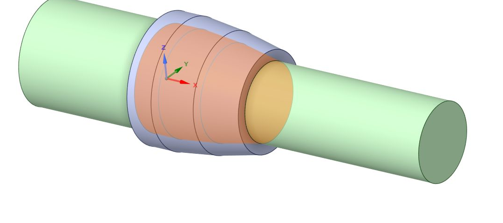
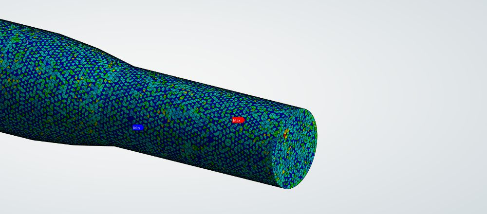
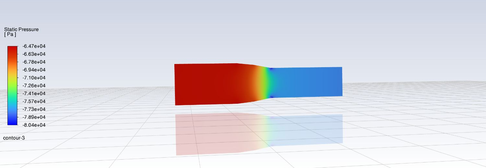
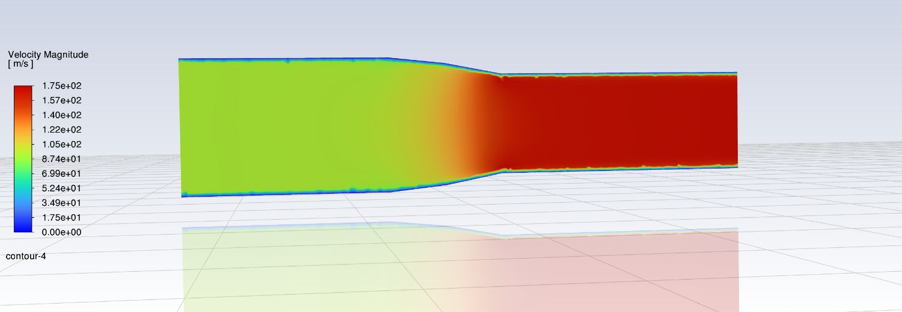
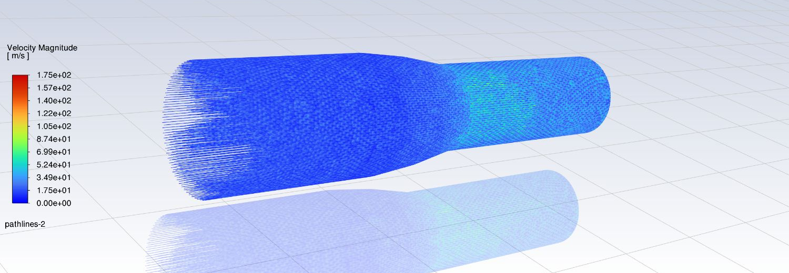
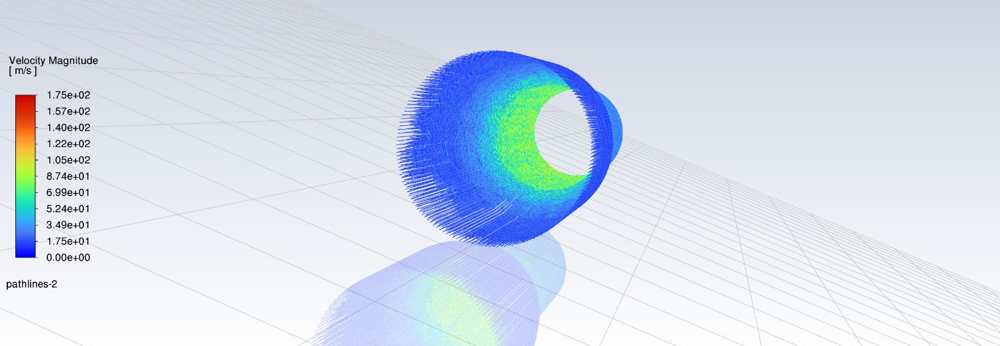

Penn Jet Propulsion Nozzle Design
An internal design challenge to CAD a nozzle within a fixed set of constraints and a materials budget - finishing top 3 while using roughly a third of the available budget.

Overview
As part of an internal nozzle design challenge with Penn Jet Propulsion, I had to design a nozzle in CAD that met a set of engineering constraints while staying within a fixed materials budget. I analyzed the design with both FEA and CFD.
Process
I used SolidWorks to design the nozzle, then analyzed tradeoffs between candidate materials and chose 316 stainless steel to stay under budget while still maintaining a high factor of safety. I used SolidWorks Simulation to model stress on the nozzle and validate the design before finalizing it.

3D render of the final nozzle design
CFD Analysis
In addition to the structural FEA, I ran a CFD simulation of the nozzle in Ansys Fluent. I extracted the flow volume from the CAD model in SpaceClaim, meshed it and checked mesh quality using skewness statistics, then applied pressure inlet and pressure outlet boundary conditions and solved the flow.






Results
The final design finished top 3 in the challenge, using roughly 33% of the available budget while maintaining a high factor of safety given the stress for the competition. The CFD results showed the flow accelerating through the nozzle's contraction, with static pressure dropping across it and an area-weighted average outlet velocity of about 164 m/s.